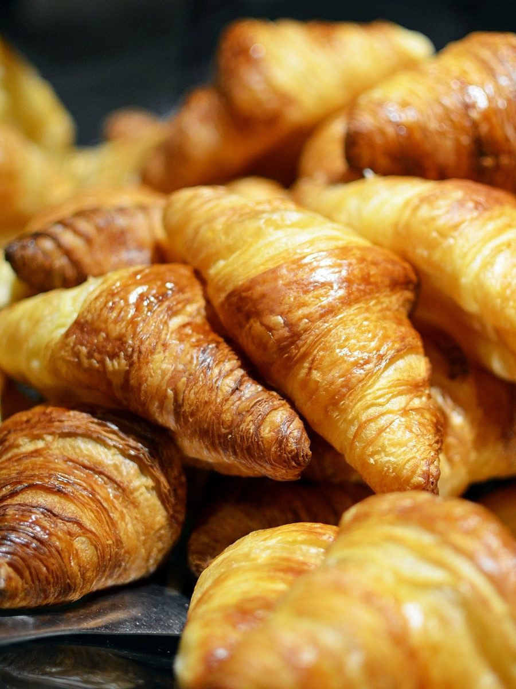

ベーカリー / 北海道上川郡美瑛町
BackereiHachi
北海道上川郡美瑛町にあるベーカリー「Backerei Hachi」のご案内ページです。営業時間やメニューなどの詳しいことは準備中。まずはInstagramをのぞいてみてください。
 01
01 02
02 03
03
04 05
05制作側の連想
「Hachi」から、六角の巣房を。
制作側の連想で、お店の理念・由来とは無関係です。屋号の意味や由来は分かりません。制作側は「Hachi」という綴りの響きから、日本語の「ハチ」(蜂や八)を連想しました。そこでこのページは、蜂の巣のような六角形の小部屋を並べる作りにしています。「Backerei」の綴りは、ドイツ語でパン屋を指す言葉に似ていますが、お店との関係は分かりません。
巣房 06〜12
六角の部屋に、パンのイメージを。
写真はお店や美瑛町のものではなく、国外・撮影地不明のフリー素材です。提供しているパンを示すものではありません。
 06
06 07
07 08
08 09
09 10
10 11
11 12
12- 赤と白のチェックの布の上のねじり形のパン(イメージ)
- 木の台に置かれた麦の穂の形のパン、エピ(イメージ)
- 白い布を敷いたかごに入ったロールパン(イメージ)
- 皿にのったパンとバター(イメージ)
- 布にのせたパンと小皿のバター(イメージ)
- 木のまな板にのったカットした全粒粉パン(イメージ)
- 白い背景に置かれた丸いクロワッサン(イメージ)
ご案内
お店のこと(確認できたものだけ)
| 所在地 | 北海道上川郡美瑛町大町1丁目4-20 |
|---|---|
| 電話 | なし |
| 営業時間 | 準備中 |
| 定休日 | 準備中 |
| ご予約 | 準備中 |
| 駐車場 | 準備中 |
| SNS | Instagram @backerei_hachi |